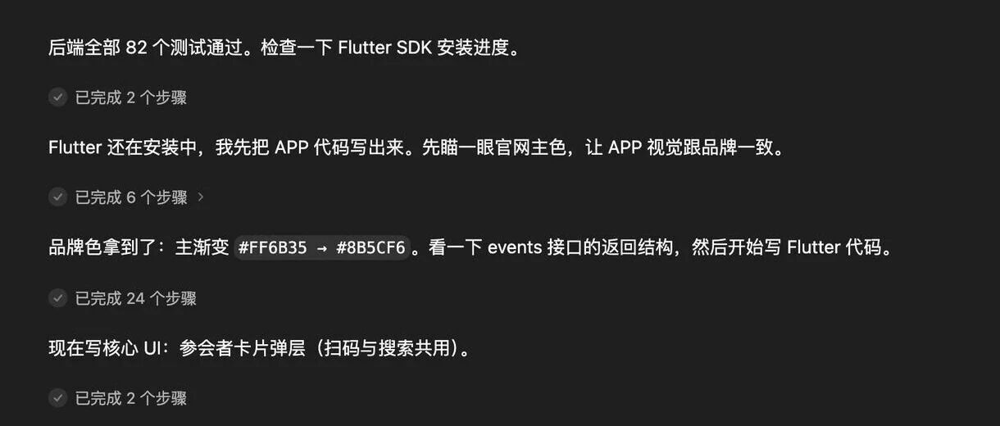

2.4T 參數、性價比碾壓——國產模型拐點已至

阿里巴巴發布 Qwen3.8-Max，一位 AI Maker 在真實任務場景中測試後，給出了令人信服的使用感受：國產模型與頭部閉源模型的差距已經非常小，他願意將 Qwen3.8-Max 作為主力模型使用。
作者批評了「國模與硅谷閉源模型不在一個梯隊」的慣性思維。從時間維度看，國產模型已從早年「不堪一擊」到現在「站穩腳跟」，在國際社區也贏得了尊重。Sam Altman 也曾承認開源生態的價值——讓各國各行業不必完全依賴少數美國公司。
2.4T 總參數（兆級）、95B 激活參數、稀疏 MoE 架構、100 萬 Tokens 上下文、原生多模態支持。2.4T 參數規模在國內僅有兩個模型達到，工程難度極高。從 2T 擴展到 3T，和從 200B 擴展到 300B，難度完全不在一個量級。
Coding 任務：讓 AI 完成一個實際產品 App，包括找 Logo、二次加工、用戶名密碼兼容，跑了兩個多小時，一次性交出成品
辦公主務：讓 AI 生成課件 PPT，AI 直接採用千問辦公主頁配色，最終成品「很有美感」
不只是 Qwen3.8-Max，之前發布的 Kimi K3 以及後續將發布的國產模型，都說明國產模型與頭部閉源模型的差距已非常小。Coding 和辦公，將是接下來半年的重點中的重點。
Qwen3.8-Max：2.4T 總參數、95B 激活參數、稀疏 MoE 架構、100 萬 Tokens 上下文、原生多模態——放在今天的模型裡，這已經是頂配級別。
「兩年前，我們討論國產模型，還是能不能用、差距有多大。現在，我們已經開始把它們和全球最強的模型放在一起，比較能力、價格和真實任務的完成效果。這個變化來得比我預期得要快。」
— AI Maker 測評者這次 Qwen 把辦公放到除 Coding 之外第二重要的位置。OpenAI Codex、Anthropic Claude Cowork 都在遷移到專業知識工作場景（文件處理、研究、分析、交付）。國產模型競爭也從 Coding 逐漸進入白領工作場景。從業者心理也在轉變：不再預設落後，而是同等標準比較。
| 維度 | Qwen3.8-Max | 對標頂級閉源模型 |
|---|---|---|
| 總參數 | 2.4T | 同量級 |
| 上下文窗口 | 100 萬 Tokens | 相近水平 |
| 多模態 | 原生支持 | 標配 |
| 開源/閉源 | 開源 | 多為閉源 |
| 辦公能力 | 千問辦公加持 | Claude Cowork、Codex 競爭 |